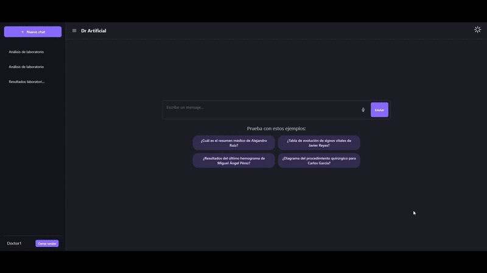
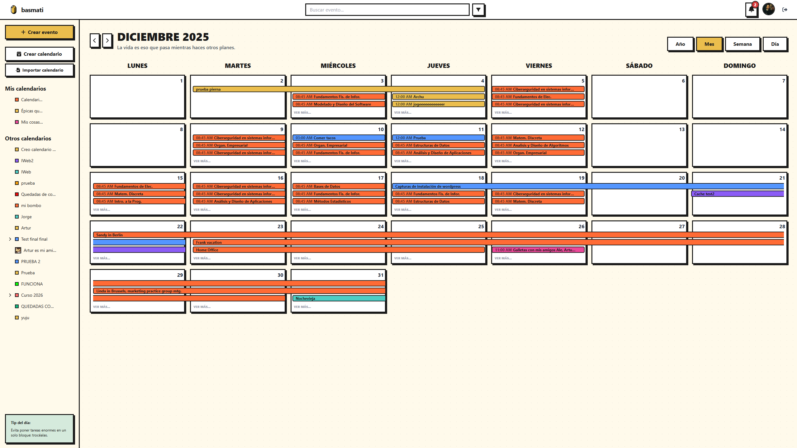

About
I'm a software engineer based in Malaga with a strong bias toward backend development, data engineering, and cloud infrastructure. I like working close to the technical core of a product, especially when the challenge involves APIs, data flows, deployment, and system integration.
My profile is strongest when a team needs someone who can build clean services, think about how they run in production, and connect the engineering work to something useful and real. Rust is a defining part of my technical identity, but I also work comfortably with Python, PostgreSQL, Docker, AWS, OCI, Linux, and the tooling around delivery and operations.
I studied software engineering in Malaga and care about sound fundamentals: algorithms, modeling, data structures, system design, and maintainability. I recently completed Coursera's Architecting Solutions on AWS certification, which fits the direction I'm building toward in production systems and cloud architecture. In practice, that usually translates into software that is not only implemented well, but also easier to deploy, operate, and extend over time.
Experience
-
2026 — Present
Machine Learning and Data Analysis · BHS Corrugated Spain
Architected scalable PostgreSQL-based data pipelines for extraction, feature engineering, and validation. Improved the production deployment lifecycle of predictive models through CI/CD integration and MLOps practices, helping align data science and engineering in a demanding industrial environment.
-
Ongoing
Hackathons, collaboration, and fast delivery
Repeated contributor in collaborative projects involving FastAPI, Oracle Autonomous Database, React, Docker, AWS, and OCI. I usually take ownership where backend, deployment, and system integration need to come together quickly.
Certifications
-
Jun 2026
Architecting Solutions on AWS · Coursera
Certification focused on AWS architecture, serverless systems, IAM, and event-driven design across enterprise and hybrid cloud scenarios.
Verify Credential
Projects
-
roma
Metaheuristic optimization framework built in Rust with a focus on performance, scalability, and full technical control. Zero external dependencies.
-

Dr. Artificial
Medical assistant prototype with a web interface, Python backend, embeddings, and retrieval workflows aimed at real product utility.
-

basmati
Collaborative calendar and events platform built with React, Vite, FastAPI, MongoDB, Docker, and cloud integrations including Google Calendar, Teamup, OpenStreetMap, and AWS S3.
-
PokerHelper
Rust desktop software for computer vision, statistical support, and Texas Hold'em decision tooling.
-
Brain
FastAPI backend with secure Oracle Autonomous Database integration for an AI-assisted chat product.
-
VMware vSphere ESXi Library
Bash CLI toolkit for provisioning, cloning, and destroying virtual machines on ESXi.
-
WikiMovies
Java and Spring Boot backend project focused on data modeling and business logic with MySQL.
-
Monkey-Pop
React-based web game showing frontend delivery and product polish in a smaller scope.
-
MyLeetCode
Algorithmic practice in C with a low-level engineering mindset.